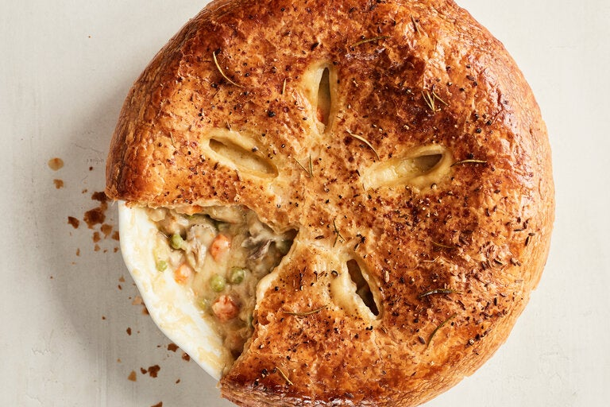

Chicken Potpie

Description
Chicken potpie is a classic American comfort food that may prompt visions of long labor and many dirty dishes, but it can be a rewarding one-pot meal with the use of store-bought dough. This quick version uses mirepoix, a flavor base traditionally made from celery, carrots and onion, with mushrooms added for depth and body. Flour, stock and heavy cream are added to create gravy, though you can substitute sour cream or half-and-half for the cream, depending on what you have on hand. The chicken simmers gently in the gravy before being topped with puffed pastry and baked. For the puff pastry, don’t worry too much about the size of the store-bought pastry; just make sure that it covers the top with some room to spare, as it will shrink as it cooks.
Ingredients
- 2 tablespoons extra-virgin olive oil
- 1 medium yellow onion, peeled and finely chopped (about 1 cup)
- 2 medium carrots, peeled and chopped (about 1 heaping cup)
- 1 celery stalk, finely chopped (about 1⁄4 cup)
- 2 garlic cloves, minced
- 12 ounces mushrooms (preferably oyster), roughly chopped (about 4 cups)
- 1 fresh rosemary sprig (or 1 teaspoon dried rosemary), plus more for garnish (optional)
- Kosher salt (such as Diamond Crystal) and freshly ground black pepper
- 2 tablespoons unsalted butter
- 1⁄2 cup all-purpose flour
- 3 cups chicken broth
- 1⁄2 cup heavy cream
- 3 boneless, skinless chicken thighs (about 11⁄4 pounds), cut into 1⁄2-inch pieces
- 11⁄2 cups frozen peas
- 1 (8-ounce) sheet frozen puff pastry, thawed
- 1 egg, beaten, for brushing
- 1⁄4 teaspoon fennel seed (optional), crushed
Steps
- Heat the oven to 400 degrees and line a sheet pan with foil.
- Heat the olive oil in a medium (10-inch) skillet or Dutch oven (preferably oven-safe), over medium. Add the onion, carrots, celery and garlic and cook until just beginning to soften, about 3 minutes. Add the mushrooms, rosemary sprig and 1 teaspoon salt and cook, stirring occasionally, until mostly soft and much of the liquid has sweated out, about 10 minutes.
- Stir in the butter until melted. Add the flour and cook, stirring, to coat the vegetables and to brown slightly, about 3 minutes. Add the broth by the cupful, stirring constantly with a wooden spoon and scraping up any bits from the bottom of the skillet. Bring to a simmer and stir until it thickens to make a gravy. Reduce the heat, stir in the cream and cook over low heat just until combined. Add the chicken, remaining 1 teaspoon salt and 1⁄2 teaspoon pepper, and stir over low heat until chicken is mostly cooked through, 3 to 5 minutes. Remove from the heat and stir in the peas; discard the rosemary sprig. Season the gravy to taste with salt and pepper.
- If the pan you are using is not oven-safe, transfer the mixture to a deep, 10-inch pie pan or baking pan. Transfer the pan to the prepared sheet pan to collect any drips. Unroll the puff pastry and place it over the filling, making sure there is a 1-inch overhang on all sides, stretching slightly if needed. Trim any excess pastry with a sharp knife and set aside (see Tip).
- Brush the top of the pie with the beaten egg, and carefully create several small slits in any pattern of your choosing to allow steam to escape while cooking. Scatter small rosemary sprigs over the top, along with fennel seed or pepper, if desired.
- Bake until the puff pastry is puffed and golden brown, about 20 minutes. Reduce the oven temperature to 375 degrees and bake until the pastry is cooked through and the filling is bubbly, 15 minutes more. Remove from the heat and set aside for 10 to 15 minutes to cool slightly before serving.